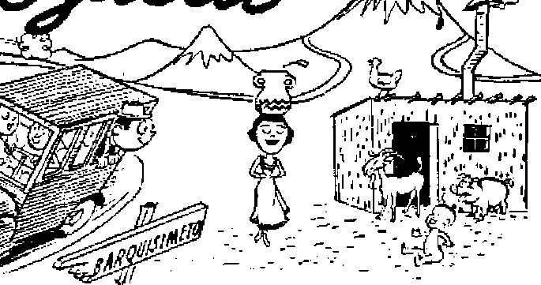

Q-«*hec’s ’’Little Caesar” learns about the law from Jehovah’s witnesses
Symptom of Juvenile Delinquency
World’s noisy appeals go unheeded—why?
Colorful life of the rugged interior
THE MISSION OF THIS JOURNAL
News sources that are able to keep you awake to the vital issues of our times must be unfettered by censorship and selfish interests. “Awake!*’ has no fetters. It recognizes facts, faces facts, Is free to publish facts. It is not bound by political ambitions or obligations; it is unhampered by advertisers whose toes must not be trodden on; it is unprejudiced by traditional creeds. This journal keeps itself free that it may speak freely to you. But it does not abuse its freedom. It maintains integrity to truth.
“Awake !’* uses the regular news channels, but is not dependent on them. Its own correspondents are on all continents, in scores of nations. From the four corners of the earth’their uncensored, on-the*scenes reports come to you through these columns. This journal’s viewpoint is not narrow, but is international It is read in many nations, in many languages* by persons of all ages. Through its pages many fields of knowledge pass in review—government, commerce, religion, history, geography, science, social conditions, natural wonders—why, its cover* age is as broad as the earth and as high as the heavens.
“Awake I” pledges itself to righteous principles, to exposing hidden foes and Subtle dangers, to championing .freedom for all, to comforting mourners and strengthening those disheartened by the failures of a delinquent world, reflecting sure hope for the establishment of a right* eous New World
Get acquainted with “Awake!” Keep awake by reading “Awake!”
PTiMJRT-TEJJ SEMIMONTHLY By watchtower bible and tract society, INC.
117 Adams .Street
K, H. Knoilr, President
Printing this issue; 870,0qg
L»iuaa» in which this magmim Is poblished;
SendTtiflnLlilr-—AFrikiaiis, English. Finnish, German, Norwegian, Spanish. Monihly—DattWi, French, Greek, Portuguese, Swedish, Ukrainian.
Offices Yearly sntKcribtion Rate
Ameriei, U.S,. 117 Adams St,, Brooklyn I, N-Y, $1
Australia, 11 Hereford Jia., Ulrathiieid. N.S.W- Ss
Canada, 40 Irwin Are.. TororSto .1. Ontario SI
England, .14 Craven Terrace, Lornlui), W. 2 Tn Soith Africa, G23 BtEtfln Reuse, Cape Town 7s
Entered at setontl^lacir mtiur at Brooklyn, M. Y.
Brooklyn 1, N. Y„ IL S. A.
Grawt Suiter, Secretary
Five centi a copy
Remittances .shnuldbe sent tn office in your ci)uu-
try in ctunpliance wills regulations to guarantee Rat# delivery of money. Reinittanees are aecepted at Ernnklyii from conn Iries stliere no office Is Incited, by internaUrjnai money order only. jtubsrriptioi] rates In different countries ire here stated in local currency. Notice of expiration (with renewal blank) Is sent at least two issues before subscription ei’ piren. Chang# of address when sent our offir:e may ba eipectcfl effective within nue month. Send your old as wel] as new address,
Ant of March 3, 1879. Printed in U. S A.
CONTENTS
Jubilant Press Welcomes Decision
Little Man’s Big Pride Injured
Maurice’s Bridge Is Falling Down!
The Bridge Is Gone; Duplessis Is Going 8
Reproducing the Miracle of Life 9
“Your Word Is Truth”
A Dictator Gets Spanked! learns about the low
Quebec's little Caesar
By “Awofcef" (orrespandent in Canada
NORTH America’s own contribution to the realm of dictators ^as received a sound spanking. The punished autocrat is Maurice Duplessis, Quebec Province’s “Little Caesar”. The man who keeps Quebec’s face in totalitarian mud lest it rise to enjoy the freedom common to the rest of Canada can thank his own blunders for the indignity.
“Little Caesar” indeed! Did the ancient Caesars annihilate their enemies ? So would Maurice Duplessis! Did the Roman line of emperors raise the name of Caesar above the law and make it synonymous with Rome itself? So would the name of Duplessis gain such elevation in Quebec! Did the Caesars contribute great building projects to their peoples, some of which are still in use or at least partially standing? So would the great Duplessis! In fact, to be specific, did he not present a nine-span bridge to posterity? Yes, he did; and, in fact, he placed said bridge in a category rarely enjoyed by such structures, linking its destiny with that of his own political party. But this leads into a matter deserving of greater attention. We will first prepare the way with a consideration of Premier Duplessis’ run-in with law and order that precipitated a judicial thrashing.
Among his “blunders” referred tp above was his forgetting to dissolve entirely the from Jehovah’s witnesses court system in Quebec. Any dictator should always take precautions of this nature or make sure the judges are solidly “packed” behind him. Now, lo and behold! One or two honest jurists have thrown the premier of all Quebec into consternation by their discovery that their power to administer justice does not stop even with the chief of state himself-
Like a typical totalitarian, Duplessis is a great one to marshal his might and storm forth against an apparently helpless minority- Following World War II, he displayed this trait by pouncing on the religious group known as Jehovah’s witnesses. How many times he may have regretted this rashness is unknown. The compelling force of Christianity fighting for its liberty proved something far different from the political “pushovers” the premier had been used to. Among his woes resulting from this battle was a personal law Case in which Duplessis entangled himself when he forced an honest workingman out of business. Quite logically, the man sued the premier for damages.
The case has a very interesting background, which is well told by Time magazine under the heading, “Judicial Spanking”: “For many years Roncarclli’s was one of Montreal’s leading restaurants. It
catered to the carriage trade and had the reputation of being one of the few good places where a man could take his wife and family. Owner Frank Roncarelli was also a member of the unpopular Jehovah's Witnesses sect Soon after World War II, when Quebec police were arresting Witnesses right and left on such charges as obstructing traffic and peddling without a license, Roncarelli began bailing them out. In December, 1946, Premier Maurice Duplessis took a hand in the matter, ordered the Provincial Liquor Commission to revoke Roncarelli’s license "now and forever’ . . . Roncarelli was soon out of business.”
Mr. Roncarelli had done nothing worse than provide bail for persons charged before the courts, which everyone has a right to do. It was remarked by the influential weekly, Saturday Night: “The action of the head of a provincial Government, in punishing a provider of bail hy depriving him, upon no other ground whatever, of the license to carry on his business seems to us the most amazing misuse of the sovereign power of the province that has occurred in a good many years/'
Most Quebeckers are used to official misconduct and feci there is nothing that can be done about it. Jehovah’s witnesses, however, arc made of sterner stuff, and Mr. Roncarelli promptly sued Duplessis personally for the damage he had suffered. The lawsuit appeared to many as a futile gesture. As remarked by the Victoria Daily Times: “When Mr. Roncarelli entered suit against the premier, he was admired for his audacity if not for his ingenuousness; for in Quebec, Mr. Duplessis is not only premier and Attorney-General but, like Pooh-Bah, Lord High Everything Else.”
But the audacity paid off. On May 2, 1951, Mr. Justice MacKinnon of the Superior Court ruled that Duplessis had indeed committed “a faulty and unauthorized act”. He assessed damages of $8,123.53 plus costs (about $1,500.00). Said the decision: “It is apparent that the real reason for the cancellation of the plaintiff’s license was that he had been furnishing multiple bonds | for Jehovah’s witnesses] . . . and that he was a member of that sect.”
Both radio and press headlined the story lor which many Canadians had Jong waited: “Duplessis ordered to pay Jehovah’s witness $8,123”; “Witnesses Win over Duplessis”; “Mr. Duplessis Reproved”; “Intolerance Rebuked.” Said the Edmonton Journal: “If this decision is upheld, it will be a sharp and painful reminder to Premier Duplessis that he is not above the law—a reminder he has needed for a good many years. It should have a wholesome effect in checking the tendency to arbitrary government and persecution of unpopular minorities which has made its appearance in Quebec of late.”
It is an outrage ~in any civilized country when a Crown officer such as Mr. Duplessis, who is supposed to be enforcing the law, defies the very laws which he is charged with applying and seeks to injure a respectable, law-abiding citizen simply because of religious prejudice. The Osbawa Time-Gazette put the matter aptly, charging that Duplessis “allowed religious prejudice and intolerance to become weapons of an effort to ruin a citizen with religious views different from his own.
“Such intolerance, such interference with the legal rights of citizens, have no place in Canada, and it is astounding that they should have been used by a man holding the high office of Premier of a Canadian province as a means of punishing one with whom, he disagreed on religious matters. ... The decision of Mr. Justice MacKinnon can be interpreted as a stinging rebuke, not only to Premier Duplessis, but to all others who would interfere with the religious freedom of Canadian citizens?’
The Globe mid Mail, Toronto, said: “The Superior Court has acted according to the finest traditions of British jurisprudence.”
The Victoria Daily Times commented: “The mark of history was on the Montreal court judgment this wook. . . . Few spec-tators at this trial thought that Roncarelli would have a chance. Mr. Justice MacKinnon’s judgment demonstrated that, while the premier has been able to introduce restrictive legislation against the press and screen in Quebec, the authority of the courts nevertheless remains (in this jurist’s hands at least) inviolate. This was a wise and courageous decision.”
The Kingston Whig-Standard had this to say: “Damages of some $8,000 were awarded him [Roncarelli I which seems inadequate in view of the business loss he suffered. The decision is nonetheless gratifying, however, as a disciplinary rejection of dictatorial methods. . . . This assumption of dictatorial power should not bo countenanced. It is most gratifying to see Mr. Duplessis placed in his proper position by the court.”
I
Little Man's Big Pride Injured
When Duplessis heard the news of the decision he burst out laughing. The very next day, however, he demonstrated how hypocritical was his outward display of mirth, Once again he began mouthing vicious, burning hatred of Jehovah’s witnesses. In banner headlines the Montreal Star announced that Duplessis would prosecute Jehovah’s witnesses for sedition. The Supreme Court of Canada had recently ruled they were not seditious; but what does the law matter to the great Duplessis? The statement said: “Premier Duplessis announced at a press conference Wednesday [ same day as the decision against him J the Government’s intention of continuing action in the pending cases. . . . The Government’s policy towards Jehovah’s witnesses is in conformity with the ’sound traditions’ of Quebec’s people, he said.”
The Watchtower Society issued a reply to these windy threats. It appeared in the Montreal Star under the heading, “Witnesses Challenge Decision to Prosecute,” and said: “General counsel for the witnesses said today he would be glad to see Premier Duplessis proceed, but doubted if he ever would. ’These prosecutions hegan in 1946, and since then, over 120 charges have been laid. Up to now he has proceeded to try four of them. Mr. Duplessis has been proven wrong, and the courts have maintained the contentions of the defense in every single instance.’ . . .
“Counsel stated that when the Attornev-General talked about the ’sound traditions of Quebec’ he was following, he really meant the ‘traditions of Mr. Duplessis’. Tt is unfair for Mr. Duplessis to blame the province for his own policy of oppressing and persecuting a minority group. His statement attributing his personal attitude to the whole province is a libel on the tolerance and fairness and respect for laws which is characteristic of many people in this province.’ ”
Duplessis’ display of bad temper was just too much for the French Canadian sense of humor to take. The idea that a Crown official acting in the capacity of attorney general, and having been called to account for his unlawful actions, should suddenly decide that the pedple who had made him look silly were therefore seditious, they just could not stomach.
The French-language paper Le Canada struck hard at “notre Maurice”: “The people have lost all confidence in the administration of justice as far as it relates to the Attorney-General of the province of Quebec. And since we live under a dictatorship, the fault lies with the dictator himself, the prime minister.”
After discussing the long delay with these cases begun in 1946-1947, the article continued: “Why the long interruption? What happened in the interval? Why had the ’witnesses’ all of a sudden become dangerous again? Strange coincidence, the same day that Duplessis announced this decision he learned that judgment had just been rendered against him. The coincidence forces the conclusion that the Attorney-General wants to exercise the vengeance of Mr, Maurice Duplessis.”
But before the premier takes his vengeance out for its exercise, he might wisely take stock of his circumstances. Since first he opened up his volley on the witnesses, his fortunes have changed. For once, his bluff has been called. Furthermore, the valiant fight by a determined group of freedom lovers has caused others to take heart. It has even assisted judges to do so. Now the Supreme Court of Canada has swept away the Quebec dictator’s erupting charges of “seditiontf against Jehovah’s witnesses, charges that formerly flowed like lava. The press, the radio, the people now see the tyrant in his true light
Furthermore, in the meantime, an ill-fated venture by Duplessis in the art of bridge building has added a note of grim humor to his puhlic and political status. At his home town in Three Rivers, he caused to be built, at a cost of $5,000,000, a beautiful new bridge across the St. Maurice river which was proudly named the “Duplessis Bridge”. Duplessis personally came to the scene in the summer of 1948 to open the structure. Perhaps he had fond visions of the bridge’s endurance unto many future generations that would think back to the “Golden Age of Duplessis” as they journeyed back and forth across the span. Probably reaching what he considered the heights of comparisons, the premier is reported to have linked the destiny of the bridge with that of his political party, saying: “This bridge is as solid as the Union Nationale.”
Ah, wnat a proud moment! Such a bridge, that it should be likened by so great a man as Premier Maurice Duplessis to his own party! So with much pomp the new bridge was proudly opened in 1948. But Jo, two years later, for eight months during 1950, the enjoyment of the bridge by “future generations” must be interrupted to allow workmen to proudly repair a number of cracks that have appeared.’ Then, no sooner is this done, than one cold night in January, 1951, with the temperature at twenty-six degrees below zero, four of the bridge’s nine spans proudly crash into the river! Four persons are plunged into the icy wTaters and drown.
Informed of the tragedy, a crestfallen Duplessis at once cried out, “Sabotage!” (along with “Sedition”, one of his two favorite words). But this time the people agreed with him. However, the general opinion prevailed that, to find the saboteurs, the premier would need to look only as far as his own office. It seems that the bridge’s contract had not been let out to public tender, but was let privately to Duplessis’ own associates. The Liberal leader of the province did not miss the opportunity to remark that the trouble with the bridge was “too mueb grease and not enough* steel”. In this modern age it does not seem to be asking too much that $5r000,000 bridge spans of but 180 feet remain intact for more than three years. Their failure to do so points an accusing finger at obvious criminal graft.
Now remember, it was Duplessis and none other who likened the permanence of the bridge to that of his party. Turning our attention now to the more important part of the premier’s allegory, and recalling the charges of graft and corruption in connection with the bridge’s construction, we cannot help but recall the words of Jesus: “Therefore everyone tljat hears these sayings of mine and does them, will be likened to a discreet man, who built his house upon the rock-mass. And the rain poured down and the floods came and the winds blew and lashed against that house, but it did not cave in, for it had been founded upon the rock-mass. Furthermore, everyone hearing these sayings of mine and not doing them will be likened to a foolish man, who built his house upon the sand. And the rain poured down and the floods came and the winds blew and struck against that house and it caved in, and its collapse was great.”—Matthew 7:24-27, New World Trans,
In making war on Jehovah’s witnesses in an effort to halt their campaign of free Bible education among the citizens of Quebec, is Premier Dupjessis showing himself and the party he leads to be in harmony with or opposed to the words of Jesus, the greatest exponent of free public Bible education that ever lived? Will he yet call a halt on his own senseless “burning hate for God and Christ and freedom” in time to avert disaster for his “house” during the storm of Armageddon? He certainly gives no indication of doing so. However, he seemingly stalls for time, rants his determination to convict all of Jehovah’s witnesses of “sedition”, yet shows no desire to follow through with action. But his bluff is being called. Finally something has started on the more than one hundred pending sedition cases. By no means could the government be made to bring them all out of moth balls, but the summer of 1951 found the Crown budged into court over one lone sedition case.
On June 11, 1951, there began at Montreal the trial of minister A. S. Gaskin, who was charged with seditious libel for distributing in 1946 the article, entitled “Quebec’s Burning Hate for God and Christ and Freedom Is the Shame of All Canada”. The Supreme Court had already ruled that there was no sedition in this article, so the case' was a foregone conclusion for everyone except Duplessis. At the end of the evidence for the prosecution the trial judge, Justice Lazure, announced rather sadly that the Crown had failed to make out a case and he would have to dismiss the charge. He considered himself bound by the judgment of the Supreme Court even if he did not agree with it.
Counsel for Jehovah’s witnesses immediately moved that all the other cases be either dismissed or brought to immediate trial. The court agreed, but instead of doing as he promised, the judge reversed himself and allowed the prosecution to drag these five-year-old cases to the September term. Why this should be necessary is hard to understand. If the Crown prosecutors do not know the law on this subject by this time they will never know it.
Even the conservative Montreal Star felt obliged to protest the prolonging of these old complaints. It remarked editorially, under the title “A Duty to Be Fair”: “It would be expected that other pending cases would be dropped, but the Crown, insists on proceeding add the remaining cases have been put over to the September term. ... It would seem to be equally the Crown’s duty not to clutter the rolls of the court with cases that have virtually been decided. It will not do to create the suspicion that the courts of Quebec are lending themselves to persecution of a dissident minority, yet this suspicion is bound to be created if these similar cases are proceeded with.”
The Star is conservative indeed in its choice of the word “suspicion”. No, the persecution is fact, not suspicion. This Jehovah’s witnesses have maintained all along. Now the continued stubborn determination of the attorney general and his support by members of the judiciary only amplify what the witnesses have said about the maladministration of justice in medieval Quebec, However, the judges who have had the courage to thus far uphold law and order through their favorable decisions are to be commended.
Were Mr. Duplessis and his henchmen students of the Bible, they would save themselves much trouble. The Scriptures record many precedents of history wherein world leaders (and much bigger men than provincial Duplessis) have sought to fight against God’s children and have been defeated. See Exodus, chanters 5-12; Second Kings, chapters 18, J 9. To Duplessis, judging by human standards, Jehovah’s witnesses looked like a helpless minority that he could easily sweep out of his Catholic province. He stormed, raged and threatened; his strong-arm squad arrested and bullied. And his results? Practically nil! Jehovah’s witnesses were declared innocent, and his prosecution came to nought. Inst^d, he has himself heen judicially condemned and spanked because of his own unlawful actions; his arrogant provincial police face actions for false arrest and unlawful interruptions of peaceful meetings for Christian worship. Even the law of gravity has taken a hand against him, sending his proud but ersatz Duplessis bridge tumbling into the river. This should give him a foretaste of the bitter medicine the Lord has poured for him and his conspirators to drink at Armageddon,
He has been successful in only one thing —making his administration and his persecutions a stench in the nostrils of decent men, and in bringing a bad name on his province. He has also helped many honest-hearted persons in Quebec and elsewhere to recognize the righteousness of the cause of Jehovah’s witnesses. Their numbers have soared from 342 in the province in 1946 to 1,091 in 1951!
Duplessis, as a lawyer, should heed the wise decision of Judge Gamaliel who sat in judgment on some early Christian witnesses of Jehovah, Peter and the other apostles who were on trial in Jerusalem. Gamaliel said: “Do not meddle with these men, but kt them alone; (because, if this scheme and this work is from men, it will be overthrown; but if it is from God, you will not be able to overthrow them;) otherwise, you may perhaps be found fighters actually against God.”—Acts 5:38,39, Acw World Trans.
As for Duplessis, his bridge is gone and he is going. Like the bridge before its fall, his position even now reveals'great, menacing cracks. If not before, his continued mad fighting against1 God will land him and his party in the junk heap of destruction at Armageddon. Let the people not bo misled. Heed the warnings of God’s Word and do not follow blind guides into the ditch of ruin and death. Take advantage of the powerful, living counsel from the Most High God, when He describes the course of headstrong world rulers:
“The kings of the earth set themselves, and the rulers take counsel together, against Jehovah, and against his anointed, . . . He that sitteth in the heavens will laugh: The Lord will have them in derision. Then win he speak unto them in his wrath, and vex them in his sore displeasure: Now therefore be wise, O ye kings: be instructed, ye judges of the earth. Serve Jehovah with fear, and rejoice with trembling.”—Psalm 2:2, 4, 5,10,11, Am. Stan. Ver.
LIFE adorns our plan- ...h ■■ nently together, but fiet in indescribable ’ ■:/ ■ nally separate. The starbeauty and variety. f regenerative abil-
book Man and the W ;* ”^**^**K t'fl^ to grow new arms logical World infop^s ' _ f ww • <f ■ ’-i^Jy becomes a form
us: 4'Just how ijttaiy ' £ £ JjrL dCl£ ■ ■'<I reproduction,
kinds of animals^ and ' _ from only a severed
plants there are we do
not know; more than "J
one million species have
already been described and named, however, and it is not improbable that as many more remain to be discovered. Within this vast array, we encounter the widest variations in size, form, degree of complexity, methods of self-maintenance and reproduction, and relations to other organisms/’
Is it any wonder, then, that the youthful offspring pf intelligent humankind look inquiringly into parental faces and ask to know where everything in general and they in particular came from? But interest in our own and other life forms is found among all age groups. An entire science, the field of genetics, devotes itself to the study of human heredity. So a consideration of the varied ways in which life is transmitted proves worth while.
Though mainly through sex is the manycolored cape of vegetation spread out over the earth and animal kind replenished, it is not the only means used. Asexual reproduction involves but one parent and requires no special reproductive organs. It is illustrated in such one-celled organisms as the amoeba or the paramecium. Usually each of these reproduces by dividing into two new cells; though at times two cells will unite instead to dwell together, at least for a time. In the latter instance the cells do not remain perma-
CRO55 SECTION OF A FLOWER
* f . 1 BXiif ^d a fragment of
V ’ the nucleus will grow a * new starfish I The spiro-
gyra, a water alga plant, may divide a filament or unite two cells of neighboring plants. The ‘'walking fem” grows new plants from the tip of a leaf.
Life may also be handed on by means of budding„ or outgrowths. Take yeast cells. A tiny enlargement on the mother cell
grows until it becomes possibly as large as the original. Then a new bud may appear on the mother as well as one on the daughter cell.
Here it would be well to mention the invaluable assistance to reproduction offered various plants by underground stems. Those of grasses and sedges are typical of rhizone stems, and other types include the bidb type, as in crocuses, hyacinths and tulips; the cat m type, as in the Indian turnip; and the tuberf as exemplified by the popular potato. Credit for very early spring flowers, like those of the crocus and hyacinth, is attributed to such stems that nourish the buds underground that began growing the preceding fall.
Molds reproduce in yet another unique fashion. From the surface of dead, organic matter, tall, slender stalks will rise, blooming at the top a round, black body covered with spores. When ripe, the encasement bursts to sweep away scattered independent spores. Each of these that contacts moist, decaying matter is capable of starting a new mold growth. Mosses too produce one-celled reproductive spores, but when these fall on a wet surface they germinate and bring forth an algalike plant. From this plant come buds that grow to become leafy moss plants. In the latter plants male and female sex organs develop, sperms of the former at length fertilizing eggs of the latter. This in turn results in a stalk with capsule containing asexual spores. Thus the two-generation moss introduces sexual reproduction.
Prominent in the sex life of plants is the generative medium, pollen. The various ways in which this is transferred from male to female organs is interesting indeed. A most obvious method is to enlist the services of the wind. Flowers of cereals, sedges and various kinds of trees employ this method. Commonly flower pistils of plants depending on wind pollination are equipped with feathery or hairy construction, thus easily catching wind-propelled pollen. -Elm and oak trees, usually wind pollinated, will be noted to blossom in flowers before their leaves appear. Otherwise, the leaves would provide a hindrance to the pollen’s arrival.
Where the wind leaves off, the pollen specialists of the insect or bird air force take over. Flowers depending on these unique aviators are outfitted to entice their visitors. They come out in bright colors and sweet fragrance. Within the anthers of the “Easter” lily are developed a number of spores which in time become pollen grains, male sex plants. Finally, the anther dries and bursts open, laying bare the powdery pollen which is next loaded aboard night-flying moths and transported by airlift to the pistils, abode of the female plants. The sticky, stigmatic surface that receives the pollen from the moth quickly encourages its growth into a microscopic, hairlike tube. This pollen tube makes its way into the pistil, inhere it bursts and empties two male sperm cells.
In fresh-water eel grass the “middleman” pollen-carrier is eliminated. An elongated stem carries the female plant to the surface where it opens on the water. The tiny male flowers are released under water and float to the top, where they are attracted by surface tension to larger objects such as the female plants. Then, once beside them, this tension and small ripples prop or tilt the male flowers just enough to touch the female stigma and pollinate.
A majority of flowering plants rely on seed dispersal to guarantee reproduction of their kind. Wind again steals the show when it comes to scattering mature seeds. Included in this classification are the seeds of maple, elm, ash and pine trees. Also, the feather-topped dandelion’s extreme success in expansion testifies to the good work the wind does for its fluffy, airborne seeds. Thistles, cattails, fireweed and virgin’s-bower add to the list. Locust pods split open when mature to catapult their wind-borne seed abroad. The Russian thistle grows branches in a globelike formation. At ripening of the seeds, the main plant stem snaps below the branches, enabling them to drive freely over the ground by wind propulsion, scattering seed.
Rivers and ocean currents carry other seeds, like those of the coconut with its buoyant husks. The bladder nut’s dry fruits are enclosed in a tough, paperlike “envelope”. The seeds within have several compartments so that if only one remains intact^ they continue to float.
Do not overlook the taxi service furnished many seeds by animals. Some are eaten along with the fruits, but, being indigestible, pass through the alimentary canal intact, later to be dropped in some
spot perhaps favorable to germination. Some birds eat the “meat” of the fruit, spitting out the seeds some distance from the parent plant. Wild carrot seeds and others cling to animal fur by means of sharp points, while some give off a sticky substance to attach it to a likely passer-by. Witch hazel, jewel weed and phlox, violet are among a class of plants with special “seed cases”. These can be snapped open and the seeds flung for sizable distances.
Turn to other life. The female crayfish releases eggs from her body to deposit them on appendages called swimmerets. There they unite with sperm cells from the male. Orthodox “run-of-the-mill” fish follow a different procedure. The female will lay a brood of eggs on a shallow river bottom. A male appears, hovers over the eggs for a time, then releases sperm cells as a milt that settles down over the eggs and fertilizes them. Bird eggs, of course, are fertilized while yet in the mother’s body, then brought to complete development and hatching after laying. The male octopus “hands” the sperm to the female with one of his tentacles, placing it in her receptacle. With the newts, the female is more aggressive. She seizes a packet of spermatozoa deposited by the male and conveys it to her own reproductive chambers.
Some life forms employ the rare gift of delayed fertilization. One salamander produced young after two years’ captivity when no opportunity for mating was afforded. Bats, are similarly distinguished. Copulation occurs with them in the autumn, but the sperm is then stored within the female’s body until the following spring, when the ova are produced and fertilized. Among animal life it is frequently the case to mate “in season”, promiscuity is the rule rather than the exception, and no social or moral requirements bind the couple together for a sustained period.
It would be appropriate to mention that some rare animal forms possess within their one organism both male and female sex organs. However, it is rarer still that both develop together, allowing for self-fertilization, Hence, cross fertilization between two individuals is the usual practice for this unusual group, called hermaphrodites, Included are some snails and oysters, annelid worms and flatworms.
Also in a class by itself is the method of reproduction known by the Greek term, parthenogenesis. Literally, this means “virgin birth”. This method features the development of all or part of the eggs without the benefit of fertilization. With the honeybee the fertilized eggs become females, the unfertilized, males. Parthenogenesis is found among some seed plants, including dandelions, daisies and sunflowers. For long some evolutionists held that parthenogenesis was proof of an evolutionary step between asexual and sexual reproduction. But not so! If any variation is involved, it appears that parthehogenesis is a “devolution” from sexual reproduction, Man and the Biological World (page 212) states: “There is much evidence that parthenogenesis is a derived condition, developed in groups that were once bisexual but that have become able to dispense wholly or in part with fertilization.”
There is much more to say. But already the stable principle of like bringing forth like can be seen throughout nature. The make-up of life’s many forms of chromosomes and their genes, amazing carriers of heredity, provoke further questions which later discussion might answer. The average layman knows that wheat grains produce wheat plants, that birds, bees and bears have little birds, bees and bears. What has been said so far should make us anxious to trace further some of the mysteries of earth’s living creatures.
Nature News
"^Best Friend” Welcomes Aviator Back to Earth <f In the summer of 1950 Ensign Stanley W. Henderson took to his parachute to forsake a damaged navy plane. He landed safely in a tree and, lo, there at the base of the trunk was one of man’s "best friends”, a dog, ready to welcome him back to earth. However, the dog proved overenthusiastic and at once bit Henderson in both legs.
Stujffing Not Bargained Fur
Though there might often be some advantage to a ready-stuffed chicken, all housewives will surely join Mrs. Jack Latham of Tucumcari, New Mexico, in preferring to do their own if the alternative is to accept the kind of "stuffing” she found in a chicken she was dressing one fall day in 1949. Taking up her work, she noted a reptile’s tail protruding from tbe fowl’s gullet. Called ttTthe scene, her husband split open the chicken to discover that it had swallowed a thirteen-inch rattlesnake. In case any are wondering, the Associated Press dispatch adds the postscript that the Lathams and their guests dined on pork that day.
Temperance Mouse Dies at Old Age of Six
<L A desert pocket mouse owned by the University of California’s associate professor of zoology, Dr. Seth B. Benson, died last year at the advanced age of six—about six times as long as this creature’s normal life expectancy. The mouse “abstained” so totally that it rejected even water, frequently fighting to keep free of drops sprinkled on it.
Dr. Benson was not surprised at this, since such desert animals require very little water. The small amounts of birdseed it ate provided all needed moisture. The mouse’s advanced age was attributed to its sheltered life.
Oog Chases Lion's Blues” Away <L A lion cub m the Moscow, Ohio, zoo permitted itself to fall into the deepest depths of despair. To provide aid and comfort and in the hope of lifting the lion’s "hangdog” expression, a dog was a 11 o w’ e d to share his cage with him.
Once, later, while strolling together, the lion had to be rescued by the dog from a rooster at whose beak the young 'king of beasts’ was taking a horrible trimming. So close has become this strange animal attachment that the lion howls unmercifully at bedtime unless the dog is at its side.
Spider's Tdcgniphy
<1 The simple orb spider continues to win the admiration of experts jn modern complicated means of communication. Have you ever noted how quickly she can be on the scene at the arrival of an adventurous insect caller? The truth is that a strand of her web is run to her nearby boudoir and drawn taut to the necessary tension. A visitor is detected by vibrations on that strand, which in turn serves as the spider’s dinner hell.
Chickens Support Automotive Age <J, Determined never to be called waylayers of progress, chickens are known to have taken tlfe automobile right in stride. One rooster rode quietly on the bumper of a car driven by Robert E. McEwan of Portsmouth, New Hampshire, for over a mile without even waking up. In California, Larry Rusyne motored the 217 miles from Fresno to Pasadena, attributing a marked cackling noise in his motor to nothing more than the 100-degree heat. However, upon arrival at his destination, he discovered in the space between radiator and grill one Rhode Island Red chicken.
■ '■ .'' ; : '/■' : . i A'?... / . ■. ■ ■ ■ . . ’. ’ ■
Symptom and Abettor of Juvenile Delinquency
HE latter half of June, 1951, saw the subject of narcotic addiction of youth occupying the first place in the newspapers of New York, the nation’s largest city. A state investigation was publicizing the shocking facts. Exposed was widespread dope traffic; one could get the stuff anywhere from Coney Island to the Bronx, Places were named, drug and candy stores, restaurants and dance halls, in the very heart of the city, where dope was being peddled. In the investigation, letters were read, tapes were played containing confessions by youths as to how they became addicts, how addiction made them thieves, forgers and prostitutes. One schoolboy, a peddler of dope, known as a "pusher", was doing a $300 to $400 business daily selling the stuff to his schoolmates; he was losing his money to the school gambler, a "bookie", who himself got snared by dope addiction.
According to H. J. Ansling-er, head of the Federal Narcotics Commission, the dope situation is gravest in New York city, is at epidemic level in nine large U. S. cities, and in the nation some $100,000,-000 worth is sold on the streets annually.
Narcotic addiction begets not only crime but algo extreme violence; old men and women being unmercifully clubbed because of resisting the attempts of addicts to rob them. Dope addicts stop at nothing: they attack and rob doctors, burglarize pharmacies and hospitals and boast that they would even kill their own mother if she stood in the way of their getting dope when they needed it. One dope fiend criminally attacked his own sister after stupefying her with dope. Police, court and school officials all tell the same story: dope addiction and dope-inspired crime among youth are increasing at an alarming rate.
In two weeks the New York city police arrested 250 dope peddlers; some 5,000 New York high school students, it is estimated, are addicts. Chicago, Illinois, reports that the dope situation has gone '‘completely out of control”; four out of five seeking cure for addiction are minors; the court especially set up to handle narcotics cases is jamming the jails, and the latest estimates place at 25,000 the number of youthful addicts. Incidentally, if the narcotic menace is worst in New York city, and Chicago with one-third the population has some 25,000 youthful addicts, can we be so sure that the 5,000 estimate of youthful addicts in New York city is correct?
Other cities, such as Detroit, Michigan, and St. Louis, Missouri, tell the same sordid story of an alarming increase in dope addiction among youths and of an aroused citizenry trying to combat the evil. One California official estimated that 15 per cent of the teen-agers in his state are dope addicts. In just a tew years the number of teen-agers admitted to the government hospital at Lexington, Kentucky, for curing narcotic addiction, increased seventeenfold.
While some teen-agers doubtless acquire the habit through no fault of their own, drug addiction is the logical result of a philosophy which puts pleasure first. Youths who indulge in liquor find the step to drug addiction a short one. Usually, this begins with the smoking of marijuana cigarettes, known as “reefers”.
Marijuana addiction is bad, but it does not stop there. Youth is enticed to try sniffing a white powder, heroin, known as “horse”, an opium derivative, for a greater thrill, “bang” or “kick”. Heroin has been described as “the most baneful, the strongest and most habit-forming drug, the most determined in its effect”. Heroin inflates personality, benumbs ordinary impulses of human judgment, gives one a sense of intense egoism or self-importance, lasting for several hours.
Soon the pleasure-seeking, impatient teen-ager, the quicker to realize the effects of the dope, to “get high”, as it is called, learns to dissolve the powder by use of a spoon and a match, and to jab it into his arm with a hypodermic needle. Then he graduates to “main lining”, learns to fasten a band around his arm to raise the large vein in his forearm and to jab the stuff directly into it. Two or three weeks of this and the teen-ager is fully addicted.
Now the pay-off. He finds that his system is inured to the stuff so that he no longer feels “high” when he takes it. Instead it puts him into a lethargic or comatose state. So why does he not break off? Because he cannot, Every fiber of his body cries for the stuff and he has to have it or suffer the unspeakable agony, so it seems to him, of the wearing-off process. If he fails to get it he sweats, vomits, has stomach cramps, diarrhea, running of the nose, etc. Morbid fears beset his mind, he is going mad! He learns why this addiction has been called “the white death”.
The youthful victim now loses interest in sports, his family and in school. Only one thing matters: he must have his dope. He uses all his spending money, takes odd jobs to get more, borrows, but still it is not enough to supply the ever-increasing need for this “happy dust”, as it is also known. He begins stealing from his own family, from neighbors, and if the addict is a girl, prostitution is found to be a quick and easy way to get the money for dope. Addicts spend from $4 to $40 a day for the stuff, at the rate of one or two dollars a capsule. No wonder dope addiction has been termed the “most dangerous form of juvenile delinquency”.
And here is where a vicious cycle sets in. To get money for his own dope need, the addict will deliberately ensnare others so as to profit from supplying their need. Thus the spiral of addiction widens, and that, by youth itself. One girl of 17 told of making a profit of $1,000 a week from peddling dope; a young woman of 21, who had the reputation of being one of the “most vicious” dope peddlers in Newark, New Jersey, had among her customers a twelve-year-old child whom she had taught to sniff heroin.
According to one press report, “derelict” parents are driving children to use dope. Without a doubt, parents do come in for the chief blame in this matter of juvenile narcotic addiction. When parents show love of pleasure more than love of God and the principles of righteousness, and neglect their children, what can they expect but that their children will also put pleasure first? Parents lead a double life, become strangers to their children and then profess to be shocked when they hear of the dope addiction of their offspring.
Educators are also to blame. They have failed to properly instruct children on the dangers of drug addiction. In some cities the law provided for this to be done, but the school authorities neglected to obey this law, some even offering the lame ex-□use that to instruct youths regarding the harm resulting from dope addiction would arouse a desire to indulge. Federal Narcotics Commissioner Harry J* Anslinger stated that part of the blame could be placed on the psychiatrists who wrote a book on Marijuana Problems^ in which they minimized the harm of marijuana addiction, and which book is in practically every library in the country. “Totally inaccurate/’ was his description of it. Hollywood producers also are blameworthy, in that they made heroes out of their stars who were convicted of being dope addicts., The government also has to share the blame. Narcotics squads are pitifully undermanned. The entire U. S. force could keep busy in New York city alone. And politicians, as the recent Kefauver investigation showed, are ever ready to connive with the worst elements of society, breaking the law for the sake of filthy lucre. The New York narcotics investigation brought to light police laxity and corruption in the matter of narcotic control. The dope traffic is the underworld’s most vicious racket, even as gambling is its most widespread.
And the teen-agers themselves arc also blameworthy. Dope addiction among them has been described “as a symptomatic response to the general world tensions under which the teen-ager is living”. In other words, it is a refusal onb their part to face the facts, and in this they cannot shift all the responsibility on their parents, on the school authorities, on the police and poli-tlcians,i and on the ruthless dope traffickers. They know certain things are right, certain things are wrong, and that when they go in for dope they are yielding to selfish impulses. The instinct of self-preservation alone should teach them to be on guard. “Whatsoever a man soweth, that shall he also reap.”—Galatians 6:7.
Public-spirited citizens, civic groups, school authorities/ politicians and judges are advocating campaigns of education of both parents and children. Stricter laws are being urged, such as making the selling of dope to children a separate crime and tripling f the penalties now in force. The death sentence for the hardened "repeaters” and those who sell to minors has been urged by a senator, a labor convention and by a woman’s club. Late in June, 1951, one veteran dope peddler was given fifteen years, the highest penalty yet inflicted.
According to narcotics officers, the medical fraternity comes in for considerable blame. Their carelessness in prescribing drugs unwittingly makes some addicts; they are far too generous in the amounts they prescribe; some willingly traffic in dope for the profit obtained, and a considerable number of doctors and nurses arc addicts themselves.
Keeping dope off the market would solve the problem, but that poses a Herculean task. According to Drew Pearson, a foremost U. S. columnist, the dope traffic Js run by the underworld organization, the Mafia composed of 50 men, whose United States head is Frank Costello and whose international head is Lucky Luciano; who, for some mysterious reason, was released from Sing Sing and sent back to Italy. Criticized was the State Department for issuing pas spurts to well-known racketeers over the objections of the Narcotics Bureau.
Why these underworld characters are so interested in the dope traffic becomes apparent when one considers the profits involved. Life magazine of June 11, 1951, tells that a kilo (2.2 pounds) of heroin, selling for $1,000 in Italy, brings in a total of $200,000 by the time it has been brought to the United States, “cut” to an eight to ten per cent mixture, and retailed* The traffic has its international agents, its importers, wholesalers, middlemen, “cutters” and petty retailers, which latter are the ones who usually get arrested. Even among these, however, the profit is enormous, at times as high as 1,100 per cent.
The United Nations has a commission dealing with the dope traffic problem, and while some efforts are being made to bring it under control, there is still much room for improvement, according to H. J. Ans-linger, U. S. representative. Italy has a ten-year stockpile on hand, and recently Red China offered 500 tons of opium for sale on the world market.
Plans to provide facilities to cure the addicts also furnish no adequate answer. In the first place, neither hospitals nor jails have the space nor the equipment to take care of so large a number of youthful addicts; and, in the second place, checkups show that the per cent of those who remain cured is pitifully smalt To help those who really want to be cured an Addicts Anonymous has been formed like the Alcoholics Anonymous. The small size of this group and its meager success emphasize the seriousness of the problem.
So what hope is there? The hope of the kingdom of God which will wipe out modem Babylon with all its corruption at Armageddon and usher in a system of things that will tolerate neither the exploitation of one’s fellow man nor the debasing of one’s self; a system of things based on love for Jehovah God and for one’s neighbor. Bible prophecy indicates that the time for all this is near at hand.—Jeremiah 51:9; 2 Peter 3:13.
PRAYER, like a final appeal to the highest court, is a frequent last resort of the helpless or the hopeless. Occasions of public assembly are often commenced with a prayer gravely intoned by an officiating priest, minister or rabbi. Wars witness mass-prayer production by chaplains on either side of the battle lines, by soldiers in the foxholes and by their loved ones left behind. Personal supplications, encouraged by all creeds of religion, request divine favors in every conceivable avenue of life. To discover the emptiness of mere quantity and repetition in prayer, however, one need only consider the pagan peoples of the East,
It would be very difficult to match a devout Tibetan in turning out prayers. Besides his renowned “prayer wheel'" that whips up prayers with each rotation, he might carve a request of the gods on a plank and dip it in water throughout the day, each dip constituting a prayer. Women, while going about their daily tasks, carry little “whirligigs” which they keep in motion, each whirl of which is a prayer. The broad shoulder blades of a yak are inscribed with prayers and hung from a tree bough overhanging a footpath. Travelers cannot pass without brushing these aside, thus engineering several prayers for the author. Prayer flags are made to flap in the breeze, some carve holy words on cliffs and walls or gain favor with the gods by chanting in low, singing words the native expression meaning, “Oh, thou jewel in the heart of the lotus/7
Criticizing such practices even when carried on under a “Christian” label as a 'kindergarten religion7, Dr. Harold C, De-Windt told his audience in New York's West Park Presbyterian church on June 22, 1947, that “those who believe that enough Hail Mary's, lighted candles and medals will enable them to share in the spoils are quite contemptible”.
This alone is enough to provide considerable reason for the miserable failure of Christendom's religions to convert pagan lands to true Christianity. Dealing with the case of the Guatemalan Indians, first subjected to Roman Catholic priests three centuries ago, The Christian Century, of October 20,1948, observed: “To the Indian conversion merely meant adding a few more gods to his pantheon.” Continuing, the article, written by Willard Price, detailed the selfish credulity with which the natives consult their sorcerers for prayers of intercession on behalf of their personal whims and welfare. A typical prayer by one of these sorcerers, or brujos^ will show how they have shamelessly added Christendom's god to their own, and piled their conception of Christianity on top of their pagan foundations. Mr. Price cites an example:
“I the priest, I who speak, I who burn this incense, I who light this candle, I who pray for him—I ask you that he may obtain his subsistence with facility. Thou, God, canst provide him with money. Let him not fall ill of fever. I ask that he shall not become paralytic; that he may not choke with severe coughing; that he do not go mad; that he be not bitten by a dog; that he be not killed with iron, nor by a stick; and that he be not carried off by an eagle. Guard him, O Clouds; aid him, O Lightning; aid him, O Thunder; aid him, St, Peter; aid him, St. Paul; aid him, Eternal Father!”
Similarly, for the man’s enemies, the priest prays for sickness, troubles and injury, Narrow and benighted as this may seem, curiosity prompts a consideration of the kind of prayers offered by the parent organizations of the Guatemalan missionaries on their own home fronts, the lands of the supposedly enlightened and professedly Christian Western civilization.
Three years following the end of armed hostilities in World War II, President Truman, in his 1948 Memorial Day Proclamation, called for a universal hour of prayer for peace by the entire nation simultaneously on the evening of that day. Whether this great national prayer was not loud enough or for other reasons, the pope of Rome found it necessary on the following December 31 to as times, peace to the souls, peace to families, peace to fatherland, peace among nations”. In highly poetic phrase he prayed “that the rainbow of peace and reconciliation may under the arc of its serene light mantle the earth
for peace on our
made holy by the life and martyrdom of Thy divine Son”.
The lengthy public prayer from which the foregoing excerpts are taken was pointed forward a full year to the opening of the 1950 “Holy Year”. The year 1950 found all faiths still praying for guarantees of the elusive thing called peace. Then suddenly the pope’s beautiful “rainbow of peace” paled to a watery faintness and threatened to fade out entirely behind the black smog of war that exploded in Korea. Following a year of dismal failures in the struggle for peace, the end of the much-publicized “Holy Year” made the many earlier papal hopes and boasts appear quite useless. After trying at length to reconcile results of the “Holy Year” with the multitude of prayers offered to the contrary, a writer in the London Catholic Herald of December 22, 1950, summed up his argument, saying: “Thus we can understand how little it is to be expected that God’s grace being poured forth on to souls, as the results of great movements of prayer, will normally affect the desperate currents of contemporary history.”
Of course, everyone understands, or at least should understand, how little is to be expected from Christendom’s prayers. Undoubtedly many Chinese would understand. The New York Times announced on October 2, 1948, that in response to a request by Roman Catholic Thomas Cardinal Tien, archbishop of Peiping, the following day was to be “a day of prayer for the return of peace to China and for the spread of Christian ideals among the Chinese people”. Since then, the Reds completed their conquest of China, Chinese fighting on one or more fronts has never ceased, and China’s intervention in Korea was marked by some of the most barbaric military tactics and disregard of human life known to man’s history.
The Boston Post of August 10,1948, reported a meeting in a local hotel of the Catholic “Daughters of Isabella” and their adoption of “a resolution calling for prayers to Our Lady of Fatima, who promised the conversion of Russia if enough prayers were offered to her”. Two months later United States Catholic pilgrims gathered before the shrine of “Our Lady of Fatima” in Fatima, Portugal, to offer such prayers along with 5,000 petitions and 5,000,000 rosaries. But despite all of this and the statement of the bishop of Leira that Fatima was “the last hope of the conversion of Russians”, there is no sign of conversion of Russia to whatever Rome has sought to convert her. All that can be deduced is that “Our Lady of Fatima” has set an extraordinarily high price in prayers upon delivery of a Russian conversion.
Through prayer, God has been asked to make “world citizens” and destroy national rivalries, find lost children and cure any affliction. In the spring of 1948, the mayor of Portland, Oregon, called for prayers for the security of Italy during its crucial elections then pending, in which communism threatened to win the government. In 1946, thousands of citizens of the Dominican Republic prayed in the rain before crude shrines for the cessation of days of earthquakes and tidal waves. On the economic front, the towns of Mays Landing, New Jersey, and Laurel, Mississippi, in 1949 held prayer movements to seek relief from serious employment and industrial crises.
Moments of grave danger find men of the most hardened backgrounds turned to prayer. Some wartime authorities have contended that There were no atheists in the foxholes’, and the celebrated Captain Eddie Rickenbacker once wrote an article about the times he had sought prayer while in critical situations.
There is the Boston preacher who prayed about the advisibility of returning to athletics long enough to win an indoor mile race; and the two Melbourne, Australia, clergymen who opined that racehorse owners and trainers have as much right to pray for the success of their horses as farmers have to pray for successful harvests. Tough, wise-cracking Jack Sharkey is said to have slipped away to pray in church prior to his bouts as a prizefighter. Back in 1927, an unknown party in England tried to make the world’s fashion trend a heavenly affair when he wrote the “Rev.” W. Russell Maltby, president of the Wesleyan Methodist conference, asking for a special prayer meeting to request that women’s skirts be lengthened.
Rain has proved a fertile subject for prayer by every race of people and all creeds of religion. In recent years it has been tried throughout the United States, as when Cardinal Spellman urged Catholic rain prayers for the New York 1949-50 water shortage. South African religions were asked for such prayers by the prime minister in January, 1949, and Moslems in India went to their god for rain last October 31. The maharaja of Banaras in September, 1948, became dismayed when his rain god began working overtime. The maharaja launched a fast and a barrage of prayers to appease the god, in an effort to halt raging floods from too much rain.
Sometimes in an effort to cover everything in one fell swoop, religious dignitaries will make such sweeping requests in prayer as that offered by the pope in public on March 26, 1950, when he concluded with: “Lord, stop hatred. Disperse by Thy powerful breath greed of domination, wars, destruction; give breath to the little ones, houses to the roofless, work to the unemployed, understanding among the people, peace to the world and eternal salvation to everybody.*’
Yet hatred increases, prayers fail to halt affliction’s death-harvest, greed flourishes, wars and destruction multiply, poverty gnaws on, as much or more in religiously dominated lands as any, and the conglomeration of religions with their conflicting paths to salvation leave everyone in a quandary. The beautiful “rainbow of peace” talk in time of peace and victory prayers in time of war seem to beat rhythmically with the tune of the times. But the very occurrence of wars nullifies the peace prayers, making them appear weak and supine.
It is all so confusing. But it is worse than that. Time magazine of January 10, 1949, carried an account of a World War II incident in which General Patton of the American Third Army is said to have demanded a prayer from his chaplain for good weather prior to the “Battle of the Bulge”. At the chaplain’s attempted objection, Patton roared his wish again, and got it, a printed prayer on a Christmas greeting to the troops. This world’s prayers are tailored to fit. Some thirty thousand Roman Catholics gathered in New York’s Polo Grounds on May 1, 1949, offered mass prayer for the oppressed. But during the heyday of Hitler and his gang this same religious organization, through its representatives in Germany, prayed for the nazis and their allies, then the oppressors. This world's prayers are inconsistent and hypocritical. On July 19, 1948, Religious News Service carried a report that the then U. N. mediator in the Palestine Arab-Israeli conflict, Count Folke Bernadotte, had asked Christians to pray for the success of his efforts to bring peace in that quarter. However, not two months later, September 17,1948, Count Bernadotte was shot and killed by an assassin while about his mission. This world's prayers are impotent and futile.
Why then the sorrows attending Christendom's attempts to pray? Why her miserable failures in God’s name that encourage atheism? Why cannot her “peace god”, who is asked to shower blessings everywhere, overpower her “war gods”, who are many and divided and are peti-tioned to grant victory to their respective sides? And why are the masses of personal prayers for selfish benefit, reminiscent of the prayers by pagan sorcerers, left consistently unanswered? Do the devotees really believe their god will hear and heed all of their conflicting prayers? Yet, as they pray, so must they consider their god. Like people, like prayer, and like prayer, like god.
Prayer is not for show. To instruct his followers on the correct manner of address to the heavenly Father, Jesus said: “Also when you pray, you must not be as the hypocrites; because they like to pray standing in the synagogues and on the corners of the broad ways to be visible to men. . . . You, however, when you pray, go into your private room and, after shutting your door, pray to your Father who is in secret; then your Father who looks on in secret will repay you.” Neither is prayer for the purpose of displaying your eloquence before God, or to impress him with the number of times you can repeat his name, like a parrot: “But wheh praying, do not say the same things over and over again, just as the people of the nations do, for they imagine they will get a hearing for their use of many words. So, do not make yourselves like them, for God your Father knows what things you are needing before ever you ask him.”—Matthew 6:5-8, New World Trans.
Nor is it wise to use the channel of prayer to exalt oneself and debase others. For the benefit of some who “trusted in themselves that they were righteous and who considered the rest as nothing”, Jesus gave the illustration of the self-righteous Pharisee and the tax collector. Of the Pharisee who boasted of his works and thanked God that he was “not as the rest of men, extortioners, unrighteous, adulterers, or even as this tax collector”, Jesus said: “Everyone that exalts himself will be humiliated, but he that humbles himself will be exalted.” This it is well to remember when one tends to boast before God of himself, his nation, possessions or accomplishments. —Luke 18:9-14, New World Trans.
Today there are “all kinds of men” who deplore the cycle that throws the nations from one war or time of distress into another, while God’s refusal to heed partial and selfish prayers makes him appear slow to help struggling humanity. If you wish to ask a prayer that God will hear, simply pray in accord with his purposes instead of your own. As Jesus instructed:
“You must pray, then, this way: ‘Our Father in the heavens, let your name be sanctified. Let your kingdom come. Let your will come to pass, as in heaven, also upon earth.” This will include a paradise earth, freedom from wars, deprivation and distress, and the final end of sorrow, affliction and death. All this you can pray for, because this it is God’s purpose to bring through the rule of his Prince of Peace. The wise, desirous of a share in these and endless further blessings, will not forsake God until he is the only help left, as a proverbial “last straw”; nor will they, like the world in general, pour out a plea to heaven for every selfish whim. They will keep “seeking first the kingdom and his righteousness”, learning of it, praying for it, preaching it, in short, living for the Kingdom, that their lives may be prolonged to life everlasting under its glorious and peaceful rule.—Matthew 6:9,10, 33, New World Trans.
By “Awake!” correspondent
in Venezuela X/^ C '//*
WIEN someone mentions
South America, what do you think of? Places like Rio de Janeiro, Buenos Aires, Montevideo, ultramodern cities in a lush setting of palm trees and sandy, white beaches, with the gay spirit of fiesta ever in the breeze? Have . you ever gotten that adventurous “explorer’s feeling” of wanting to go farther than the,,places on the travel folders and see for yourself what it is like beyond? Then here is your chance. Hop aboard the bus with us leaving the capital of Venezuela on our 220-milc trip into the interior —destination Barquisimeto!
Our bus is a strange combination of modern Dodge chassis with a Venezuelan-designed body and interior, minus doors and windows. As we try to fit our lengthy North American frames into the hard, close-together scats, made for small Venezuelans, we realize that we are really in for some trip. To make things even more interesting, our fearless driver takes all corners and curves at breakneck speed, heedless of the heavy load on the top of the bus or the possibility of an oncoming car. Our “initial nervousness” at this is somewhat calmed when we are informed that he , is a very good driver, since the bad ones don’t last long. But soon we are snaking our way up and up into the high mountains that separate Caracas from the interior, and with such breath-taking scenery all around us we forget our driver and lose ourselves in the panorama of mountain peaks and seas of clouds that spread out below us.
By now we feel we have left behind all traces of civilization, as we pass women and children carrying heavy bundles of wood, or with large jugs of water on their heads. Their houses dot the road here and there, crudely constructed of adobe mud, with straw or palm-leaf roofs. Naked children in the yards stop playing to stare at us as we pass, and we in turn stare back, as chickens and pigs and goats wander in and out of the doorways. The mountain scaled, we take to lower ground and after 80 miles we find that the highway ends, as far as we are concerned, and off to the left we jog on a bumpy, hilly, dusty dirt road. Each time we hit a bump our seat seems harder when we return, and our knees are beginning to get sore from rubbing on the seat in front of us. But take heart, we’re almost halfway there. Besides, now we are coming into the jungle. Only in pictures have we seen anything like this: such lush green vegetation, what strange trees, the vines growing in wild 'profusion, and against this setting of vivid green, tropical plants and multicolored birds arc like splashes of bright paint in a work of modem art.
But our bus careens on, through river beds, around hills, and before we know it the road straightens out and we are bouncing across dry arid plains. Here pueblos begin to appear, and passengers arriving at their destination clap their hands to signal the driver to stop. Others board with chickens, ducks and dogs. And then, twelve hours from the time we started, we arrive, tired, dusty and stiff, but excited and happy.
Barquisimeto
Here we are at last in Barquisimeto, a city of 105,000 people, out in the middle of nowhere, surrounded by desert plains, barren hills to the north and west, the green rolling foothills of the Andes to the south. What could a city in such a setting be like? Would there be anything modern? Well, it won’t take long to find out Our friends are waiting for us and soon we are driving down narrow, congested Carrera 20, or Coint'rcio, the main street of business. I don't know that we had expected to sec them still riding burros, but we just can’t get over all the new cars, the best models of every make, from Ford to Cadillac.
And does it surprise you how the people are dressed? Such a mixture of latest fashions from New York and home-made creations. And some of them really are “creations”. Basically from patterns they have seen in catalogues, they have added many touches of their own. Among all this mingle the poor, whose ragged and generally very dirty clothes seem as if they will hardly hold together, they having been patched and mended so much.
Watching them pass by we remark how friendly they seem. Yes, our friends assure us, they are very friendly and almost exaggerated in their politeness. Although at the present there is a general lack of culture, the government operates free schools, both day and night, where all types of useful subjects are taught. There seems to be a general thirst for education t something that was withheld from them for so long. We wonder if we will find the same thirst for the superior education found in God’s Word, the Bible, that we have come to help them gain.
Turning our attention now from the people, we notice for the first time the stores. How strange they appear to us! Most of them are completely open across the front, and the merchandise is displayed on the floor, in glass cases and hung on the walls It looks as if they had everything from expensive French perfumes to razor blades and children’s toys. Even the fronts and entrances of the stores are utilized, for gay-colored materials are draped there to catch the eye of those who pass. But we see, too, the “better stores”, and these present a much neater appearance, more like the ones we have been used to back home, and to our surprise, here and there an ultramodern structure, set back the required number of feet from the street, rises in striking contrast to its surroundings. Our friends tell us that they can buy just about any of the well-known American and European products here, and in the windows we see the latest modem electrical equipment and household fixtures. We drive past a cine, a theater, and another surprise: the very same picture as playing that we saw advertised in New York just before we left. Stopping at a bodega (grocery) for a refresco, we find just about the same assortment of drinks as back home, but we have to pronounce the names with a Spanish accent or they won’t know what we are talking about.
Out of the business district, we begin to see how the people live. This is one of the older sections of town, so the houses are without yards, built even with the sidewalk, side by side, with no room between. Glances through the open doors and through the barred windows reveal lovely large patios, with potted palms and flowers, yes, even orchids too. The houses are built around the patios, each room having an entrance into it, and the beautiful tile floors complete the effect of old-world Spain. As in the business sections, so here too, modem homes are mixed in with the old, and it is so nice to see again lawns and gardens. But as we near the edge of town, the pavement stops and the dirt road begins, lined with a mixture of small cheaply constructed stucco houses and the mud huts of the poor. Here they live as we saw them along the road; generally the filth is nauseating, but here and there are evidences that someone is trying to live better: a house is painted, the earth around has been swept, the clothes are clean. Farther down we have to go around a large water hole in the middle of the road. Amazed, we pause to watch the pigs wallowing in one end while at other points round about the women are washing their clothes in the muddy water and little children are filling up their buckets and tin cans with water to be used at home. Water is scarce and none is too dirty to be used in some manner or other. To our relief we are informed that they do not drink this water; they have to buy their drinking water, and our friends point out a two-wheeled, burro-drawn cart that is passing, with two large drums filled with the precious liquid.
Continuing slowly, due to the deep ruts and holes in the road, we come to a place where we must drive around a house which was built there before the road was made. Although long since abandoned, it has been left standing there to gradually crumble away. Half the kitchen walls have fallen down, so we can see firsthand how they cooked. Along one side is a hearth built up about waist high. Some blackened stones are still there, indicating that here the wood' or charcoal fires were built. We are told that here they cook their caroatas negras (black beans) and the harepas (a bread made from corn that has been boiled and then ground). These last are fashioned into little round cakes and placed in the ashes against the hot stones to bake. When done the black is scraped off and they are eaten with the beans. These two items form the basic diet, being eaten practically three times a day, from the time persons are old enough to eat solid food till the day they die- As for the drink, there is chicha, a fermented drink borrowed from the Indians, which has a very high alcoholic content and is made from a liquid derived from cooked corn. It is relished by rich and poor alike, especially at such festive times as Christmas and Easter.
Also adopted from the Indians is the practice of chewing chimo, which has taken on the proportions of a real industry. Chimo is a paste gained from the decomposition of tobacco by means of brandy and adding flavorings, such as vanilla. It is such a concentrated form of tobacco that it will almost kill a person who is not used to it. They say that the workers in the campos who chew it are never bothered by the poisonous snakes that generally endanger the lives of the other workers.
As we turn away from the crumbling house someone calls our attention to* several women working away in the shade of a hut. We find that they are working at footlooms, weaving tops for the colorful native sandals that the poor class wear. And there are some men carving out the soles from leather. Our friends say that this is one of the major industries of the poor, along with the weaving of hammocks; but it is a meager living, indeed, that they make at it. As we watch these small, dark, quiet people at work in these strange surroundings we have a feeling that civilization is very, very far away. But the illusion is lost when from within the mud hut comes the sound of a radio, and the song that is playing is one of the recent "‘hits” from the States. Smilingly we move on.
Many houses have crude wooden or straw crosses above the doorways, and one cannot help but notice that here there is an increase of charms and amulets worn around necks and wrists. Asking about this we learn that here, even more than in town, the peopld are extremely religious and superstitious. Especially the older women are very fanatical for the traditions that date from many years, inherited for the most part from the original Indian inhabitants of this region. They light candles in front of pictures of saints, turn them upside down when asking a petition to encourage a speedy response, and they have a diversity of objects and magic formulas for the returning of health to the sick. It is truly pitiful to see so much poverty and ignorance, ignorance especially of the true God Jehovah and the pure clean worship, which is the only kind acceptable to Him,
Now turning to the left and driving south we come to the section of town called “Caja de Agua”, that is, “Box of Water,” for here is the city's reservoir. Along the main paved street, which is the highway leading to the fine, quite modem airport, are many small business establishments. But there is another business here, not so apparent to the outsider, but Well-known to all the rest. This is the section of the “felices mujeres” (happy women), and we are surprised and shocked to learn that prostitution is a legal business in Venezuela. We just cannot believe it when we hear that many of the most prosperous and supposedly intelligent men of Barqui-simeto come here. Disgustedly we turn away. Surely, “as it was in the days of Noah,” the people have corrupted themselves. How comforting to know that shortly God's kingdom will make a clean sweep of all this iniquity and usher in a new world in which “righteousness is to dwell”.
"Citff of Sunsets”
By now we are.well ready to go home —but wait. There is something else out here on the edge of town, the thing for which Barquisimeto is best known, and since it is about six o’clock it is just the right time to see it. Yes, it's the sunset! “Barquisimeto, City of Sunsets” is a term familiar to all down here. And this evening it seems to have outdone itself in a brilliant and fantastic display for its admiring visitors. One looks not only to the west, but, to the north, the south, and even to the east. The strange, beautiful cloud formations that are ever present 'are gradually changing from the soft dove gray of twilight to a delicate glowing pink, which, as the sun continues to sink, changes to an indescribable color. Names like “turquoise”, “baby blue,” and “indigo” lose their meaning when one tries to use them to describe these. Only the memory, not the pen, can record such colors, and we know that in our memories this, our first sunset in Barquisimeto, will long remain a thing of joy and beauty, to be recalled with great delight.
We watch till the last bit of color fades, then silently we turn and walk to^the car, as if the least noise would break the spell that beauty has woven here, the feeling of a great peace, an intense happiness. And sure enough, the sound of the ignition turning over shatters it all and we turn to see again the mud huts, the pigs, the naked children, and the “felices mujeres”.
Riding back we discuss the events of the day. We’ve seen and heard and learned a lot, certainly a lot more than the average tourists who follow the routes marked out by the travel agencies. But one thing in particular stands out in our minds: the great need of all these people, the need of all honest-hearted people the world over, for the righteous rule of Jehovah by his Son Christ Jesus.
The “Right Soil” Bears Fruit
EVERY farmer feels joy and satisfaction as he notes his land yielding fine crops. Having spent much time and energy on his land he feels well rewarded.
Jehovah God, the great Creator, may be likened to a farmer in both a literal and a figurative sense. After creating the earth and causing dry land to appear, did he not plant trees, shrubs, grasses, grains and every kind of herb or vegetable? And as he viewed his work did he not also feel refreshment, joy and satisfaction as he saw that it was “very good”?—Genesis 1:11,12, 29-31; Exodus 31:17.
Jesus’ illustration of the sower shows Jehovah, by means of his Son, as a farmer in a figurative sense. We find this illustration or parable recorded by Matthew, Mark and Luke. Matthew's account reads: “Look! a sower went out to sow; and as he was sowing, some seeds fell alongside the road, and the birds came and ate them up. Others fell upon the rocky places where they did not have much soil, and at once they sprang up because of not having depth of soil. But when the sun rose they were scorched, and because of not having root they withered. Others, too, fell among the thorns, and the thorns came up and choked them Still others fell upon soil that was right and they began to yield fruit, this one a hundredfold, that one sixty, the other thirty. Let him that has ears listen.”—Matthew 13:3-9, New World Trans.
Today Jehovah is having this seed sown by causing the good news of God’s kingdom to be preached in all the earth. (Matthew 24:14) This seed or message falls on four kinds of soil or hearts, but only one of these brings forth fruit. Since only those who bring forth fruit can give joy and satisfaction to the great Farmer, Jehovah God, and gain everlasting life for themselves, all of us will certainly want to avoid everything that would make us unfruitful.—Proverbs 27:11; John 15:8.
After telling his disciples why he spoke in parables or with illustrations, so that those whose hearts were not right could not understand, Jesus gave the explanation of the illustration of the sower. Regarding the seed which fell alongside the road and which was picked up by the birds, Jesus said: “Where anyone hears the word of the kingdom but does not get the sense of it, the wicked one comes and snatches away what has been sown in his heart.” —Matthew 13:10-19, New World Trans.
Why do some not get the sense of the message of the Kingdom? Because they are not sufficiently interested to want to understand it. They do not hunger and thirst for righteousness. They do not yearn for truth and understanding. They may be fully satisfied with what they have or may love pleasures more than they love God, The word of Ihe Kingdom does not penetrate down into their hearts, and so the Devil, who does not like to see human creatures bearing fruit, snatches away the seeds of Kingdom truth. How? By having enemies of the truth ridicule, slander and otherwise oppose the servants of Jehovah.
Continuing his explanation, Jesus said: “As for the one sown upon the rocky places, this is the one hearing the word and at once accepting it with joy. Yet he has no root in himself but continues for a time, and after tribulation or persecution has arisen on account of the word he is at once stumbled.”—Matthew 13:20,21, New World Trans.
Because the word of the Kingdom is such good news many listen and are glad to learn that it is indeed true. However, if these accept it merely because of selfish reasons their joy win be shbrt-lived. Why so? Because unless the seed of truth has gone down deep into our hearts and become a very part of ourselves because it is just, right and unselfish, we will shrivel Up, as it were, when the blazing sun of persecution strikes us. We bear no fruit.
Neither does the one bear fruit who receives the Kingdom, message in a heart pictured by the thorny ground. Such a one may listen and understand, “but the anxiety of this system of things and the deceptive power of wealth choke the word, and he becomes unfruitful.” (Matthew 13:22, New World Trans.) Jesus repeatedly warned against such selfish concern. True, we must provide things needful and decent in the sight of all men; but will we be so anxious about these things or so absorbed in laying up treasures on earth so as to choke the seeds of Kingdom truth that they cannot grow and bear fruit? Which is more important, being rich with God or with men ? the few short years of selfish enjoyment in this world or everlasting life in the new world of righteousness?
In contrast to the seed that fell alongside the road, that fell on the rocky ledge and that fell on thorny ground, the seed that fell on the right kind of soil did bring forth fruit. “This is the one hearing the word and getting the sense of it, who really does bear fruit and produces, this one a hundredfold, that one sixty, the other thirty.” Or, as Luke puts it, they are the ones that “after hearing the word with a right and good heart, retain it and bear fruit with endurance”.—Matthew 13:23; Luke 8:15, New World Trans.
The right and good heart retains the message of the Kingdom; the truth regarding it goes down deep because of a willingness to learn and above all because of a real love for truth and righteousness, Such a heart loves the truth so much that rather than to shrink from persecution it rejoices to be accounted worthy to sutler for it. Nor does it let the cares of this life choke out the truth; instead it keeps on seeking first God’s kingdom, and so continues to grow and to bear fruit, thirty-, fold, sixtyfold and even a hundredfold. —Matthew 5:6; 6:33; Acts 5:41.
And what is the fruit that such' right and good hearts bring forth? Well, since the seed is the message of God’s kingdom, the fruit it produces could not be the devel-opment of a beautiful character. Rather it must be more of the same thing, namely, the bearing witness to the Kingdom,( preaching to others. With our hearts we believe unto righteousness, but our salvation depends upon our confessing with our mouths to others what we believe. And if our hearts are really filled with a knowledge and appreciation of these truths our mouths are bound to speak about them. The very purpose of our having received the truth is that we might “always offer to God a sacrifice of praise, that is, the fruit of lips which make public declaration to his name”,—Matthew 12:34,35; Romans 10:10; Hebrews 13:15, New World Trans.
Our heavenly Father rejoices to see us bearing fruit and will reward us with everlasting life in his new ^yorld. Additionally, our fruit-bearing results in putting others on the way to life, who by bearing fruit themselves will help still others to also get on the way to life.—1 Timothy 4:16; Revelation 22:17.
In view of the foregoing it would seem to be of interest to know a little more about this modem method of healing known as zone therapy. It might well be said to be a combination of massage, osteopathy and chiropractic, or that it takes cognizance of the principles in
MANY are the unorthodox methods of healing. Of course, by “orthodox” is meant the allopathic system espoused by the American Medical Association and other like highly respectable societies all over the world and which is championed by such men as Dr. Morris Fishbein, The power and influence of organized medicine is particularly manifest in legislative chambers and in the editorial rooms of the metropolitan press. Among the less favorably situated unorthodox therapies are homeopathy, osteopathy, chiropractic, naturopathy, physiotherapy and zone therapy.
Relative to the last named, zone therapy, note the following which appeared in the U. S. Hospital Corps Quarterly, November 1944, Vol. 17, No. 6, page 201:
"B. S, ShoperPhM2c. Halts Hiccoughs. —To a Camp Pendleton man, B. S. Shope, PhM2c, should go the credit of curing that Los Angeles hiccough victim after 13 days of suffering. Shope turned the trick by what is known as zone therapy, after electric shock treatment failed.
“The victim, Lawrence Schone, 31, an aircraft worker, went to sleep for the first time without anaesthetics since his hiccoughs started, after Shope massaged the man’s feet for an hour. The nerves in the feet are associated with the stomach and the diaphragm, Shope explained, and massaging of the nerve reflexes is soothing and relaxing. The same cure was used by Shope here several months ago when a marine fell victim to hiccoughs. Shope effected this cure after the victim hiccoughed 2 days and 2 nights.”
volved in these. Its recognition of the importance that the nerves play in health is akin to the chiropractic basic concept of health, while its emphasis onL breaking up congestions and stimulating circulation by working on the muscles gives it something in common with osteopathy and massage. The founder, inventor or discoverer of zone therapy is one Dr. Wm. H. Fitzgerald, who, among other activities, served as an assistant to the famed Professor Poiitzer of Vienna. According to him the body is divided into ten zones, corresponding to the ten fingers and ten toes, and each organ in the body is in one or more of these zones. (See illustration.) Bringing pressure to bear or massaging certain of these zones has a definite effect in bringing about nor- ,| mal physiological 1 function in all parts of the zone treated, no matter how remote the area affected may be from the part treated. To jl illustrate, massage 1 of the big toe may • relieve headaches. ;
The nerve endings of these zones are : I to be found in the feet, chiefly on the bottom of them and behind the ankles.
By massaging certain parts of the feet, circulation is stimulated and the various organs helped, termed “compression massage on the reflexes of the feet”. This system holds that congestion is at the bottom of many if not most of humanity’s ills.
The zone therapist is not concerned with your case history. Instead of you telling him what is wrong he tells you what is wrong with you. By exploring your feet-with the tip of his thumb he is able to tell whether you have diabetes or liver trouble, whether you suffer from headaches or backaches. His theory is that crystals accumulate in the nerve endings, slowing up circulation. This registers itself in tender spots on the feet. By massage these crystals are broken down, a rather painful process at times, and circulation stimulated, thus enabling the organ located in that particular zone to cure itself.
Seemingly there is nothing wrong with one’s feet, or .then again there may be. But when the zone therapist gets hold of them, if there is something wrong with the patient’s body, he will cry out in pain as the tender spots on the feet are located. Often after a treatment the feet are so sore as to make it necessary to wait several days before giving another treatment. Generally cures do not follow after a single treatment, as was the case with the patients suffering from hiccoughs. Improvement can’ be expected after a few treatments, the nature of the ailment and condition of the patient determining how long zone therapy is to be used.
Zone therapy encourages everyone to help himself by means of the principles it holds and teaches. No one can harm himself by massaging his feet, and by practice and observation he can become more and more skillful in administering self-treatment. Zone therapy also holds that because of the zone arrangement in the body any one part of the body can be helped by massage of another part if in the same zone. For instance, massage of the hands will increase circulation in the feet, thus eliminating the discomfort of cold feet; massage of the right elbow will help a sore or injured right knee, etc.
That zone therapy might not be so unorthodox after all may be gathered from the words of the late Dr. William Osler, one of the foremost physicians and surgeons of aJJ time.- “When the nerves of the eyes and,the feet are properly understood there will be less need for surgical intervention.”
In the main, the practitioners wno make use of zone therapy also recognize the value of chiropractic, massage, diet, etc. To illustrate this we quote one authority on zone therapy as fofZows:
“Do not feel discouraged or discount any one method because it fails to give relief in every condition; even the medical profession with all its skill and learning is compelled to acknowledge defeat in some cases. . . . When an adjustment of some vertebra is necessary to relieve a particular nerve impingement, sec that the patient is given the attention of a physician skilled in that particular art of healing. If surgery is required, as we all know to be true in some cases, see that the patient is given the care of a surgeon, and the best thpt can be had for his particular case.”
Zone therapy is one form of heating that seems to have brought relief to many of humanity’s sufferers. However, its benefits are temporary at best. Only the great Physician, Christ Jesus, can and will bring in permanent cure, and this he will do by destroying death itself. (1 Corinthians 15:25,26) Even at the present time this great Physician is bringing about permanent cures as regards sick minds and hearts hy means of the truth of God’s Word.—Isaiah 33:24; Jeremiah 33:6.
This War
These are the moves that have been made to stop the Korean war, which began at 5 a.m. June 25, 4950: At 5:45 p.m. the U. N. Security Council asked for a cease-fire, which was ignored. On July 13, 1950, India urged acceptance of the Chinese Red demand for entrance into the U. N., hut the U. S. refused “appeasement”. December 8 President Truman and Prime Minister Attlee rejected “appeasement”, but said their countries were “ready as always” for peace talks. December 15 a U. N. committee made the first of three unsuccessful proposals for a cease-fire. On March 24, 1951, Gen. MacArthur pro-posed a settlement in the field between commanders. On April 11 Truman said the U. S. is “ready at any time” for peace. Then, after nearly a year of war, Communist newspapers toQk up a U.S. senator's proposal for a cease-fire, and hints of peace began to come from Russia. On June 23 the Soviet U. N. delegate, Jacob Malik, proposed a cease-fire at the 38th parallel, Actual discussion of the agenda for the truce negotiations was begun in Kaesong July 10, but the meetings were broken off July 12-14 because Chinese armed guards prevented U. N. correspondents from going to Kaesong. On July 25 tbe agenda was completed and actual truce talks began July 27. From August 5 to 10 the discussions were again broken off until the Reds promised to honor their previous guarantees of neutrality for the conference area.
The Communists insisted that the cease-fire line be along the 38th parallel, which would require the U. N. to drop back slightly from its present positions to an undefendable line. On August 16 this deadlocked question was turned over to smaller U. N. and Red committees who met informally in the hope of reaching an agreement. On August 23 tbe Communists again broke off the talks, accusing the U. N, of violating tbe neutral zone around Kaesong. Whether peace was actually desired or whether the Communists merely wanted a rest from battle still remained an unsolved question.
The Next War
<$> It was a definite change in Soviet policy when the Krem-fin opened the pages of Russia’s press in August to messages from the British foreign secretary and the U. S. House of Representatives. Despite this change in policy, political leaders in the West do not feel that the danger of another world war has been eased.
U: S. secretary of defense,
George C. Marshall, has pointed to an “ominous” build-up of military power by the Soviet bloc, and charged that Korea is “only an incident in a world picture that requires us to continue building up our strength”. Gen. Eisenhower has said that the U. S. must either rush the building of anti-Soviet strength in Western Europe or “get out”. President Truman asked Congress (7/31) for an additional $233 million to keep up the rapid pace of atomic energy development, and the Defense Department reported (8/2) it had obligated $35,300-000,000 during the last fiscal year for military supplies.
Time magazine 18/20) well illustrated the scope of preparations - for the next war when it said: "Herodotus figures that 100,000 men toiled 20 years in the hot Egyptian sun to build the Great Pyramid of Cheops. Assuming^ a twelve-hour day and seven-day week, this works out at 8.7 billion man-hours. The U.S. is now getting ready to put forth every year a defense effort equivalent to five Pyramids of Cheops.”
Oppression
“When the righteous are in authority, the people rejoice: but when the wicked beareth rule, the people mourn.” -- Proverbs 29:2.
Mourning is evident today. Rumblings in the Balkans indicate that the rural population retains strong objections to the Communist collective farms. Reports of riots in the Russian-run uranium mines in Czechoslovakia follow the same pattern. In Berlin the Reds took hasty action (8/10), to hinder the Communist World Youth Festival delegates from comparing West Berlin conditions with those in their own oppressed lands, yet 1,100 of them asked to be left in West Berlin. Thousands have braved death itself to leave their homes, friends and families for an . unknown future outside Communist lands, as did the men who fled (8/2) to Sweden on a small Polish, minesweeper and reportedly said they were "tired of the 1 error regime, sick of political officers on board and disgusted with army officer trials in Warsaw”.
Elsewhere, an estimated 1.5 million prisoners of war have not been returned by Soviet Russia and its satellites, and this does not include the millions abducted from conquered lands into forced labor camps. Yugoslavia’s Premier Tito said (7/27) the Russian leaders are mass murderers who built their power on the corpses they uprooted from their homes and worked to death in the Siberian wastes. But Tito’s own government likewise produces mourning, Yugoslav party bosses have been accused o# being "drunk with power”, and they are using strong-arm methods against the peasants, forcing them to deliver wheat to the state at prices that have ho relationship to production or living costs.
Scattered violence in Syria protests against the old feudal land system. Reform leaders claim the big landowners still demand a marriage tax and other feudal taxes similar to those European serfs had to pay in the Middle Ages.
Such conditions are horrible. Conditions in other lands are just as bad, and no nation’s conditions are ideal Even in the LT. S., where freedom is prized, corruption, waste and fear are rampant. The people mourn today because the wicked rule, but soon Christ’s kingdom will end such mournful conditions, and under His righteous authority earth’s inhabitants will forever rejoice!
Perdn of Argentina
Argentina's dictator hates opposition. Last winter when railroad workers struck he had them tried for "crimes against the state”. When they struck again in August over whether they would be allowed to choose their own leaders, he had them threatened with military trial. His representatives tell outside nations that in the November 11 elections the opposition parties ‘’will continue to have every kind of freedom and guarantees”, yet when they printed posters he closed their print shop and jailed many of their leaders.
Before the elections, the biggest rally in Latin-American history occurred to "draft” Juan and Eva PerGn as presidential and vice-presidential candidates. The bait that drew the crowd was that everything was free. Free train rides to Buenos Aires, free taxi service in the city, free food, free movies. By normal standards the demonstration was ridiculous, but so were the displays made by Hitler and Mussolini.
Border Dispute
<$> Latin America is one of the last areas where borders are still in dispute. One such dispute is between Ecuador and Peru, who have quarreled for a century over their boundary, and fought a virtual war over it in 1941. Border incidents have occurred since then, but the most recent one could have proved serious. Ecuador accused Peru (8/11) of attacking Ecuadorean garrisons, and Peru accused “drunken” Ecuadorean troops of having fired on Peruvian frontier posts. The border is wild, jungle land inhabited chiefly by Indians, but neither country wants to give up a foot of what it considers its territory.
Council Says Churches Sick
For the first time the World Council of Churches, which represents most large nonCatholic denominations, elected a woman, Sarah Chakko of Lucknow, India, as one of its six coequal presidents (8/6). In its meeting in Geneva, Switzerland, it said much about the world situation, but from the thousands of words that were uttered, Time magazine (8/20) made the following to-the-point quotation: "Our churches are sick. The sickness is shown in their being at home in the world and conformed to the world’s standards. At the same time, the churches are sick in that they are isolated from the world and failing to speak to it . , . In many subtle ways the churches capitufate to the temptation of worldliness, as for example in relying on the protection of the state, on the support of the wealthy, on a particular form of civilization.”
Honor Code Violated
<$> The violations of the honor code at West Point (the U.S. Military Academy) by about 90 cadets who cheated on examinations caused nation-wide discussions. Judge Hand, who headed the board of review, said the "confidence of the people in the army” was at stake. Cardinal Spellman got great publicity over asking Roman Catholic colleges to admit any of these cadets who might apply. Also, they were anonymously offered all their expenses paid at Catholic Notre Dame University, provided they need the assistance. The New York Times commented editorially (8/15): “The West Point authorities have seemingly decided that they should not trust the h'ves of sn/chers and the safety of the nation to officers who have lied or cheated to -gain their commissions. . - - We hope Cardinal Spellman will make it clear that he does not regard the dismissed cadets as martyrs deserving of a reward. As his statement stands there might be some ambiguity on that point.”
No More Meat on Friday
<£■ Special dispensations to individuals or groups often provide conflicting situations within the Roman Catholic Church. Such a dispensation was granted 862 years ago by the pope, allowing the crusaders to eat meat on Fridays, and in the course of time it was extended to the people of Spain and her possessions, including South America, Mexico and parts of the United States, and it is still hanging around in 1951. Most dioceses have revoked it, the last one being the Diocese of Tucson, Arizona, where Catholics will no longer have this special privilege after October 5. If it was wrong for Catholics to eat meat on Friday anywhere else, then why was it right for them to do so in this diocese? Is not God's Word the same everywhere? But then that is where the difficulty enters in. God’s Word, the Bible, docs not forbid eating meat on Friday. In fact, it warns us that some would do this very thing, “depart from the faith . . . speaking lies . . . forbidding to marry, and commanding to abstain from meats, which God hath created to be received with thanksgiving.”— 1 Timothy 4:1-3.
Mileposts
Several mileposts, marking new advances in numerous fields, were reached in August One was the new altitude record set (8/7) by a singlestage rocket, the Viking, which shot to an altitude of 135 miles over the New Mexico desert, and reached a top speed of 4,100 miles an hour.
Another advance was reached when the first message was sent 3,000 miles across the U. S. from New York to San Francisco (8/17) on the $40 million microwave radio relay system that will make coast-to-coast television possible. Across the continent are 107 towers, averaging 125 feet in height, which receive, amplify and reaend the microwaves.
In another field an outstanding announcement was made when the navy said (8/21) that it had awarded a contract "for the first nuclear-powered submarine”. This means that development of the atomic-powered submarine has now passed from the experimental stage to the construction stage. Such a boat should have virtually unlimited range and tremendous speed.
Viewing such advancements some men become puffed up with their own wisdom, but they should recall that man is merely learning how to use the powers Jehovah God put in the universe, and man uses them for destructive purposes. Jehovah will soon destroy such wicked use of his creation by presumptuous men, and will establish permanent righteous conditions under which man will enjoy using the things God has created.
< T IS easy to understand a person who uses everyday language. The same ^Bis true when one reads a Bible written in everyday speech. However, /(fit is not so simple trying to understand ancient languages such as He-Ibrew, Aramaic and Greek first used in writing the books of the Bible. Even English used in Bibles of more recent centuries has become archaic; thus force and clarity are lost, and a lack of understanding results. The New World Translation of the Christian Greek Scriptures, written in modem, descriptive English, overcomes this. This “New Testament” uses common, everyday language to convey the exact shade of meaning of speech used at the time when the Scriptures were first written and as found in copies of the most ancient and reliable manuscripts. It is highly recommended to every reader, student or teacher.
Clothbcund, 800 pages, postpaid, $1.50.
WATCHTOWER 117 ADAMS ST. BROOKLYN 1, N.Y.
Enclosed find $1,50, Please send me a copy of the New World Translation of the Christian fJrgefc Scriptures,
Name............................................... Street.............................................................u....................................
City.................................. Zone No........ State ............................................ „..........
SEPTEMBER 22, 1951 31
BHE enslavement of the masses goes on apace throughout the world. The majority are in a state of involuntary servitude, being subject to fear and perplexity—mental bondage. Physics? imprisonment and virtual slavery are the lot of other countless Many are restricted by unjust economic conditions, oppressed by corrupt politics, and are under religious servitude, all of which have long held humanity in a relentless grip. True, very little freedom is to be found today, and emancipation seems remote. Why is this so? Is there any release in sight?
TO GAIN liberation and independence from the oppressive shackles and fetters of this day one needs to have the truth. And truth that is most effective in gaining freedom comes from God’s Word, the BibJe. To assist all to leam of and enjoy mental and spiritual freedom and gain liberty from error, falsehood and superstition, the book “The Truth Shall Make You Free” has been published. It identifies the enemies of liberty and traces the path of freedom from the time of earth’s creation and man upon it to the time freedom was lost and man’s enslavement came about, followed by the bringing in of hope of deliverance for mankind, the appearance of the Liberator, and then on down to the final war for freedom. These and more are found in this book of vital interest to every lover of freedom and truth. Make this freedom yours now by getting your copy of this 384-page book. Bound in attractive violet cover, gold embossed, mailed postpaid, 35c.
*e*e*44«w*M*e»*4*<«*<*
WATCHTOWER 117 ADAMS ST. BROOKLYN 1, N.Y.
Please send me the book “The Truth Shall Make You it'retT*. Enclosed Hnd 35c.
Name............................................................... ■■■■..................... Street .....................
City....................... Zone No......... State
32
A WA r